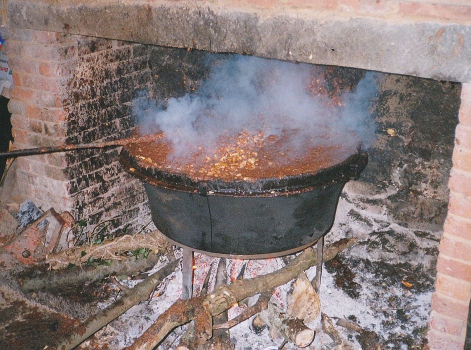

Il y a quasiment deux mais que j'alli à chutte bordèe de nièrthe beurre en la paraisse de St.-Ou, iou qu'nou fait tout chu un grand scale. J'pensais d'vos raconter l'histouèthe d'pis un p'tit d'temps, mais les St.-Jeannais m'donnèrent trop de travas.
Pour seur pour longtemps de d'vant il y avait ieu de chès bordées d'un bord et d'l'autre sièz By Gad, Dol des Corvées, Moussieu l'Chef d'la paraisse, Joe de Léoville, George du Bas de l'Etacq, Bill de Grantez, Frainque de Vinchelez et bé d'autres.
J'alli à la sienne du bu de l'an, que Wallie du Haut d'la Mare ieut sièz san biau-frèthe Bille pour aver pus d'monde.
Mon doux, mais chès qu'il en vint et chaque bolée de nièr beurre doit l'y coùter tchiques coppers d'pis que j'sis seur qu'il y avait pus de deux chents chinquante à bèr, à mangi, à danser et à s'amuser.
L'affaithe commenci à huit heures du sé et nos gens s'en rallites à temps pour lus breakfast!
Et tchi band - six accordéons, des gramaphones, eune flieute.
D'un bord nous chantait des chansons comiques et d'l'autre des cantiques!
Et des couples nous en viyait d'un bord et l'autre iou que la veue n'tait pas trop forte! J'en vit, mé, assis sus des barils en d'hors d'la maison, et pour n'pas aver fraid, eh! bain, ils s'rapperchaient l'pus qui pouvaient!
Un p'tit après neufheuthes nous vit entrer des nouviaux mathiés (!) à la petite Eglise de Vinchelez!
L'nouvé mariè avait un button-hole grand comme un pannièhe d'un cabot. Ch'tait By Gad li-même!
Et la nouvelle mathiée oulle avait mins assez de ridiaux par sus sa tête pour faithe deux pathes de ridiaux pour les plus grandes f'n'êtres de St.-Ou. Mais man puourre Franco a tchi que tu penses pour gouasoyelli d'même chein qui couôte hardi d'sous.
Chès Wallie qui proposi la santé des nouviaux mathiés et touos nos gens s'minrent à chanter "Till we meet again" oprès "Wedding dont come every day" - pour seur que nennin du mains pour des neuches comme chunna.
Pour seur Jim ieut une job à s'laver car tchi fache; nous l'aurait prins pour un ramoneur.
Je vit éttout Edgar avec son capot et son skirt qu'avait l'air d'une vieille sorièthe! Dans une grande tchaise, l'sien à la longue barbe ètait Georges su Bas de l'Etacq, l'sien qu'a d'amor deux ou trais ptits brins se moustache.
Y fut bein joué car y s'mont à pasler de football avec Lily d'oprès le Val Bachelier qu'il print pour l'goal-keeper du muratti car oulle té en footballer Lily, et ma fingre oulle n'tait pas off-side dans chu déguisement.
Hilda éttout paraissait diversement bein dans l'costume à Phlip. Nous aurait cru qu'oulle té un cockney.
Tchi qu'pense Mabel du sien à la longue barbe.
Nos gens eûtes hardi d'pliaisi et mé, j'pourrais vos en raconter d'bein des sortes mais l'boss m'a dit: Marie, j'nai pon grand run dans la gazette d'annièth pour tes sornettes et tan bagoulage. N'vla pourtchi que j'n'en dithai pas pus long, mais j'espèthe bein ertounné à une autre bordée d'pis que By Gad s'en va en aver ieunne l'jour que nous battra à la machine sièz l'y et que Wallie du Haut d'la Mathe pense d'en aver une autre bordée.
J'sis bein seur que l'siens qui allites à la sale of Work l'même jour n'eûtes pas tant d'pliaisi.
Bé seur l'affaithe coûte des sous d'pis que j'ai ouï dithe que nos gens avalites siez bouteilles de long neck, quasi septante pots de cidre, deux fais l'copper pliein d'thée; mangites siez grands tins d'galette et bein d'autres choses, mais ettout y futes servi comme des Messieurs.
Il en vint de touotes les paraisses, de la paraisse au buan bergi, de St-Jean, d'la paraisse à Douard, de St,-Aubin, et même ieun du fin fond du Mourrièth.
D'pis chutte bordée les deux gros Moussieux de souaie dansent toutes les nièths dans lus cotte!
Nennin, ch'n'est pas mé qu'alli disturber le couple qui s'trouvait sur ieun des barils. Nennin, j'ai un miot pus n'avis et pis, viyous, i y a d's années, eh bein, mais vèr, j'aimais bein chu sport. Pour seur ch'tait d'vant d'être engagi avec chu peule de "Caouain" qui s'fait vier et n'prend pus d'pliaisi à chein qui l'rendait quasiment fô d'vant que je ne l'y dise "oui!"
Cahouain
Les Chroniques de Jersey 28/2/1920
Viyiz étout: